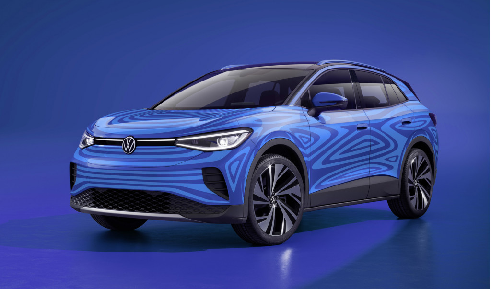

ELECTRIC CARS?
Created: October 4, 2020 by Delano Barclay

The first look of the Volkswagon ID.4 had me wondering what it would feature for the average Joe... Getting into it, it feels like a regular car with interesting features. 77kwH battery, 125kw charging and it starts out at around $40,000 (USD of course). The first impression is good but where does it fall short?
The first con is the most negligible, the aero caps. While nothing is wrong with it on a practical level, they're unsightly for someone who's a lover of nice rims. That however can be fixed because I read that they can be replaced. Next con is the accessibility of charging stations. How well and how soon will electric cars be integrated into society so that car chargers are at every gas station? Why buy an electric car if you can only go to certain places? It definitely removes a huge consumer base. Naturally, those that fall in a lower income bracket. My final con is they're noiseless. And while that may sound great in theory, in reality its pretty dangerous.
People both blind and otherwise use the sound of approaching vehicles to help them navigate roads safer. Great for the driver but who protects the pedestrian?
My thoughts aren't final but you should look into it. The Volkswagon ID.4.
How public is too public when tragedy is involved?
Created: October 4, 2020 by Delano Barclay
A question that often comes to mind when we see tragedies lining social media which is pretty much everyday. Recently artist John Legend and wife Chrissy Teigan tragically lost a baby due to a miscarriage. Her pregnancy journey was public and she'd been on bedrest for days before the incident. After it happened, she almost immediately shared it to her Instagram. Pictures of her wailing and holding her deceased baby boy with her husband present. Many users felt that it was too soon and a cry for attention as they couldn't understand why she would publicise such a horrible event.
On the other end of the spectrum, others sent condolences and well wishes and thanks. Thanks? You may be wondering why. Thank you to her for being brave enough to share something, that although is personal, but also is common among women and often frowned upon and not talked about and given enough attention.
Women and men flocked in the comments also sharing their stories of loss, creating a community that allowed people to know that they are not alone and there is light at the end of the tunnel. Social media still seems torn. Where do you stand? Where do you draw the line at oversharing?